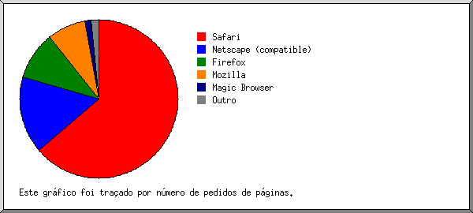
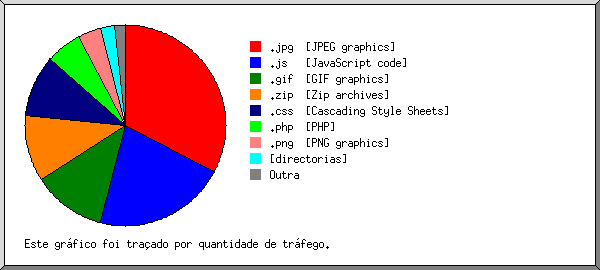

Estatísticas do Servidor Web de invisual.pt
Estatísticas do Servidor Web de invisual.pt
Começo do programa em Seg-31-Jul-2017 01:01.
Análise de pedidos desde Sab-29-Out-2016 20:53 até Dom-30-Jul-2017 13:24 (273,69 dias).
Estatísticas do Servidor Web de invisual.ptComeço do programa em Seg-31-Jul-2017 01:01.
Análise de pedidos desde Sab-29-Out-2016 20:53 até Dom-30-Jul-2017 13:24 (273,69 dias).
(Ir a: Início | Sumário Geral | Relatório Mensal | Resumo Diário | Resumo Horário | Relatório de Domínios | Relatório de organizações | Relatório de referência falhada | Relatório do sítio de referência | Relatório de Leitores | Resumo de Leitores | Relatório de Sistemas Operativos | Relatório de Códigos de Estado | Relatório de Tamanho de Ficheiro | Relatório de Tipos de Ficheiro | Relatório de Directorias | Relatório de Pedidos)
Os valores entre parêntesis referem-se aos 7 dias até 31-Jul-2017 01:01.
Pedidos atendidos: 1 403 (87)
Número médio de pedidos atendidos por dia: 5 (12)
Pedidos de páginas atendidos: 564 (82)
Número médio de pedidos de páginas atendidos por dia: 2 (11)
Pedidos não atendidos: 2 256 (3)
Pedidos redirigidos: 1 255 (0)
Ficheiros diferentes solicitados: 263 (1)
Servidores diferentes atendidos: 236 (1)
Tráfego total: 34,54 megabytes (1,83 megabytes)
Tráfego médio transferido por dia: 129,24 kilobytes (267,39 kilobytes)
(Ir a: Início | Sumário Geral | Relatório Mensal | Resumo Diário | Resumo Horário | Relatório de Domínios | Relatório de organizações | Relatório de referência falhada | Relatório do sítio de referência | Relatório de Leitores | Resumo de Leitores | Relatório de Sistemas Operativos | Relatório de Códigos de Estado | Relatório de Tamanho de Ficheiro | Relatório de Tipos de Ficheiro | Relatório de Directorias | Relatório de Pedidos)
Cada unidade ( ) representa 5 pedidos de páginas ou fracção.
) representa 5 pedidos de páginas ou fracção.
| mês | N.ped | Pgs. | |
|---|---|---|---|
| Out 2016 | 6 | 0 | |
| Nov 2016 | 46 | 4 | |
| Dez 2016 | 47 | 18 |  |
| Jan 2017 | 319 | 80 |  |
| Fev 2017 | 208 | 67 |   |
| Mar 2017 | 294 | 31 | |
| Abr 2017 | 123 | 67 | |
| Mai 2017 | 69 | 55 | |
| Jun 2017 | 98 | 73 | |
| Jul 2017 | 193 | 169 |  |
Mês mais movimentado: Jul 2017 (169 pedidos de páginas).
(Ir a: Início | Sumário Geral | Relatório Mensal | Resumo Diário | Resumo Horário | Relatório de Domínios | Relatório de organizações | Relatório de referência falhada | Relatório do sítio de referência | Relatório de Leitores | Resumo de Leitores | Relatório de Sistemas Operativos | Relatório de Códigos de Estado | Relatório de Tamanho de Ficheiro | Relatório de Tipos de Ficheiro | Relatório de Directorias | Relatório de Pedidos)
Cada unidade () representa 4 pedidos de páginas ou fracção.
| dia | N.ped | Pgs. | |
|---|---|---|---|
| Dom | 96 | 57 | |
| Seg | 200 | 31 | |
| Ter | 205 | 65 | |
| Qua | 194 | 57 | |
| Qui | 149 | 96 | |
| Sex | 451 | 183 | |
| Sab | 108 | 75 | |
(Ir a: Início | Sumário Geral | Relatório Mensal | Resumo Diário | Resumo Horário | Relatório de Domínios | Relatório de organizações | Relatório de referência falhada | Relatório do sítio de referência | Relatório de Leitores | Resumo de Leitores | Relatório de Sistemas Operativos | Relatório de Códigos de Estado | Relatório de Tamanho de Ficheiro | Relatório de Tipos de Ficheiro | Relatório de Directorias | Relatório de Pedidos)
Cada unidade () representa 2 pedidos de páginas ou fracção.
| h | N.ped | Pgs. | |
|---|---|---|---|
| 00 | 43 | 33 | |
| 01 | 15 | 6 | |
| 02 | 46 | 34 | |
| 03 | 22 | 10 | |
| 04 | 23 | 14 | |
| 05 | 51 | 39 | |
| 06 | 19 | 6 | |
| 07 | 61 | 56 | |
| 08 | 25 | 11 | |
| 09 | 17 | 8 | |
| 10 | 83 | 31 | |
| 11 | 181 | 7 | |
| 12 | 103 | 10 | |
| 13 | 14 | 7 | |
| 14 | 88 | 54 | |
| 15 | 67 | 13 | |
| 16 | 62 | 14 | |
| 17 | 52 | 33 | |
| 18 | 34 | 19 | |
| 19 | 19 | 6 | |
| 20 | 105 | 90 | |
| 21 | 199 | 14 | |
| 22 | 48 | 39 | |
| 23 | 26 | 10 | |
(Ir a: Início | Sumário Geral | Relatório Mensal | Resumo Diário | Resumo Horário | Relatório de Domínios | Relatório de organizações | Relatório de referência falhada | Relatório do sítio de referência | Relatório de Leitores | Resumo de Leitores | Relatório de Sistemas Operativos | Relatório de Códigos de Estado | Relatório de Tamanho de Ficheiro | Relatório de Tipos de Ficheiro | Relatório de Directorias | Relatório de Pedidos)
Mostrando os domínios, ordenados por quantidade de tráfego.
| N.ped | %bytes | domínio |
|---|---|---|
| 1403 | 100% | [endereço numérico não traduzido] |
(Ir a: Início | Sumário Geral | Relatório Mensal | Resumo Diário | Resumo Horário | Relatório de Domínios | Relatório de organizações | Relatório de referência falhada | Relatório do sítio de referência | Relatório de Leitores | Resumo de Leitores | Relatório de Sistemas Operativos | Relatório de Códigos de Estado | Relatório de Tamanho de Ficheiro | Relatório de Tipos de Ficheiro | Relatório de Directorias | Relatório de Pedidos)

Mostrando as 20 primeiras organizações por número de pedidos, ordenadas por número de pedidos.
| N.ped | %bytes | organização |
|---|---|---|
| 383 | 33,49% | 89 |
| 154 | 0,05% | 66.249 |
| 138 | 10,51% | 104 |
| 86 | 0,93% | 8 |
| 85 | 10,36% | 138.197 |
| 78 | 3,68% | 185.80 |
| 64 | 1,27% | 52 |
| 61 | 7,37% | 194.54 |
| 52 | 5,63% | 185.34 |
| 42 | 2,16% | 185.165 |
| 28 | 2,42% | 204.187 |
| 26 | 0,13% | 94 |
| 22 | 2,50% | 80.67 |
| 18 | 1,87% | 84 |
| 17 | 1,89% | 194.187 |
| 16 | 1,69% | 91 |
| 16 | 1,68% | 185.45 |
| 15 | 1,80% | 77 |
| 14 | 1,78% | 159.203 |
| 14 | 1,58% | 178.255 |
| 74 | 7,21% | [não listadas: 28 organizações] |
(Ir a: Início | Sumário Geral | Relatório Mensal | Resumo Diário | Resumo Horário | Relatório de Domínios | Relatório de organizações | Relatório de referência falhada | Relatório do sítio de referência | Relatório de Leitores | Resumo de Leitores | Relatório de Sistemas Operativos | Relatório de Códigos de Estado | Relatório de Tamanho de Ficheiro | Relatório de Tipos de Ficheiro | Relatório de Directorias | Relatório de Pedidos)

Mostrando os URLs de referência, ordenados por número de pedidos falhados.
(Ir a: Início | Sumário Geral | Relatório Mensal | Resumo Diário | Resumo Horário | Relatório de Domínios | Relatório de organizações | Relatório de referência falhada | Relatório do sítio de referência | Relatório de Leitores | Resumo de Leitores | Relatório de Sistemas Operativos | Relatório de Códigos de Estado | Relatório de Tamanho de Ficheiro | Relatório de Tipos de Ficheiro | Relatório de Directorias | Relatório de Pedidos)

Mostrando os sítios de referência, ordenados por número de pedidos.
| N.ped | sítio |
|---|---|
| 502 | https://invisual.pt/ |
| 40 | http://invisual.pt/ |
| 1 | https://web.archive.org/ |
(Ir a: Início | Sumário Geral | Relatório Mensal | Resumo Diário | Resumo Horário | Relatório de Domínios | Relatório de organizações | Relatório de referência falhada | Relatório do sítio de referência | Relatório de Leitores | Resumo de Leitores | Relatório de Sistemas Operativos | Relatório de Códigos de Estado | Relatório de Tamanho de Ficheiro | Relatório de Tipos de Ficheiro | Relatório de Directorias | Relatório de Pedidos)

Mostrando os leitores com pelo menos 1 pedido de uma página, ordenados por número de pedidos de páginas.
| N.ped | Pgs. | Leitor |
|---|---|---|
| 130 | 130 | Mozilla/5.0 (Windows NT 6.3; WOW64) AppleWebKit/537.36 (KHTML, like Gecko) Chrome/54.0.2840.99 Safari/537.36 |
| 116 | 103 | Mozilla/5.0 [en] (X11, U; OpenVAS 8.0.9) |
| 56 | 54 | Mozilla/5.0 [en] (X11, U; OpenVAS 8.0.8) |
| 84 | 41 | Mozilla/5.0 (Windows NT 6.1; WOW64; Trident/7.0; AS; rv:11.0) like Gecko |
| 20 | 20 | Netcraft SSL Server Survey - contact info@netcraft.com |
| 16 | 14 | Mozilla/5.0 (compatible; Nmap Scripting Engine; http://nmap.org/book/nse.html) |
| 292 | 11 | Mozilla/5.0 (Macintosh; Intel Mac OS X 10_12_2) AppleWebKit/602.3.12 (KHTML, like Gecko) Version/10.0.2 Safari/602.3.12 |
| 10 | 8 | Mozilla/5.0 (compatible; vebidoobot/1.0; +https://blog.vebidoo.de/vebidoobot/) |
| 6 | 6 | python-requests/2.3.0 CPython/3.4.0 Linux/4.4.35-33.55.amzn1.x86_64 |
| 60 | 5 | Mozilla/5.0 (Macintosh; Intel Mac OS X 10_8_3) AppleWebKit/537.36 (KHTML, like Gecko) Chrome/27.0.1453.93 Safari/537.36 |
| 4 | 4 | Mozilla/5.0 (Windows NT 6.1; WOW64; Trident/7.0; rv:11.0) like Gecko |
| 4 | 4 | Python-urllib/2.7 |
| 3 | 3 | Mozilla/5.0 (X11; Linux x86_64) AppleWebKit/537.36 (KHTML, like Gecko) Chrome/34.0.1847.137 Safari/537.36 |
| 129 | 3 | Mozilla/5.0 (Macintosh; Intel Mac OS X 10_10_1) AppleWebKit/537.36 (KHTML, like Gecko) Chrome/39.0.2171.95 Safari/537.36 |
| 91 | 2 | Mozilla/5.0 (Macintosh; Intel Mac OS X 10.12; rv:51.0) Gecko/20100101 Firefox/51.0 |
| 2 | 2 | Mozilla/5.0 (compatible, MSIE 11, Windows NT 6.3; Trident/7.0; rv:11.0) like Gecko |
| 2 | 2 | Mozilla/5.0 (compatible; NetcraftSurveyAgent/1.0; +info@netcraft.com) |
| 1 | 1 | Mozilla/5.0 (Windows NT 6.1) AppleWebKit/537.36 (KHTML, like Gecko) Chrome/41.0.2228.0 Safari/537.36 |
| 1 | 1 | Wget/1.12 (linux-gnu) |
| 1 | 1 | PycURL/7.19.7 |
| 1 | 1 | Mozilla/5.0 (Windows NT 10.0; Win64; x64) AppleWebKit/537.36 (KHTML, like Gecko) Chrome/57.0.2987.133 Safari/537.36 |
| 1 | 1 | Mozilla/5.0 (Windows NT 6.1; WOW64) AppleWebKit/537.36 (KHTML, like Gecko) Chrome/54.0.2840.71 Safari/537.36 |
| 1 | 1 | Mozilla/5.0 (compatible; Nmap Scripting Engine; https://nmap.org/book/nse.html) |
| 42 | 1 | Mozilla/5.0 (Windows NT 10.0; Win64; x64) AppleWebKit/537.36 (KHTML, like Gecko) Chrome/55.0.2883.87 Safari/537.36 |
| 1 | 1 | curl/7.35.0 |
| 185 | 0 | [não listados: 9 Leitores] |
(Ir a: Início | Sumário Geral | Relatório Mensal | Resumo Diário | Resumo Horário | Relatório de Domínios | Relatório de organizações | Relatório de referência falhada | Relatório do sítio de referência | Relatório de Leitores | Resumo de Leitores | Relatório de Sistemas Operativos | Relatório de Códigos de Estado | Relatório de Tamanho de Ficheiro | Relatório de Tipos de Ficheiro | Relatório de Directorias | Relatório de Pedidos)

Mostrando os leitores com pelo menos 1 pedido de uma página, ordenados por número de pedidos de páginas.
| no. | N.ped | Pgs. | Leitor |
|---|---|---|---|
| 1 | 260 | 202 | Mozilla |
| 2 | 659 | 156 | Safari |
| 367 | 145 | Safari/537 | |
| 292 | 11 | Safari/602 | |
| 3 | 184 | 25 | Netscape (compatible) |
| 4 | 20 | 20 | Netcraft SSL Server Survey - contact info@netcraft.com |
| 5 | 6 | 6 | python-requests |
| 6 | 6 | python-requests/2 | |
| 6 | 4 | 4 | Python-urllib |
| 4 | 4 | Python-urllib/2 | |
| 7 | 96 | 2 | Firefox |
| 96 | 2 | Firefox/51 | |
| 8 | 3 | 2 | MSIE |
| 2 | 2 | MSIE/11 | |
| 9 | 1 | 1 | curl |
| 1 | 1 | curl/7 | |
| 10 | 1 | 1 | Wget |
| 1 | 1 | Wget/1 | |
| 11 | 1 | 1 | PycURL |
| 1 | 1 | PycURL/7 | |
| 24 | 0 | [não listados: 1 Leitor] |
(Ir a: Início | Sumário Geral | Relatório Mensal | Resumo Diário | Resumo Horário | Relatório de Domínios | Relatório de organizações | Relatório de referência falhada | Relatório do sítio de referência | Relatório de Leitores | Resumo de Leitores | Relatório de Sistemas Operativos | Relatório de Códigos de Estado | Relatório de Tamanho de Ficheiro | Relatório de Tipos de Ficheiro | Relatório de Directorias | Relatório de Pedidos)

Mostrando os Sistemas Operativos, ordenados por número de pedidos de páginas.
| no. | N.ped | Pgs. | Sistema Operativo |
|---|---|---|---|
| 1 | 270 | 181 | Windows |
| 224 | 179 | Windows desconhecido | |
| 45 | 2 | Windows NT | |
| 1 | 0 | Windows XP | |
| 2 | 182 | 167 | Unix |
| 172 | 157 | Outro Unix | |
| 10 | 10 | Linux | |
| 3 | 235 | 51 | Sistema Operativo desconhecido |
| 4 | 572 | 21 | Macintosh |
(Ir a: Início | Sumário Geral | Relatório Mensal | Resumo Diário | Resumo Horário | Relatório de Domínios | Relatório de organizações | Relatório de referência falhada | Relatório do sítio de referência | Relatório de Leitores | Resumo de Leitores | Relatório de Sistemas Operativos | Relatório de Códigos de Estado | Relatório de Tamanho de Ficheiro | Relatório de Tipos de Ficheiro | Relatório de Directorias | Relatório de Pedidos)

Mostrando os códigos de estado, por ordem numérica.
| N.ped | cod. estado |
|---|---|
| 1403 | 200 OK |
| 1255 | 301 Document moved permanently |
| 1 | 400 Bad request |
| 2218 | 404 Document not found |
| 20 | 500 Internal server error |
| 17 | 5xx [Miscellaneous server errors] |
(Ir a: Início | Sumário Geral | Relatório Mensal | Resumo Diário | Resumo Horário | Relatório de Domínios | Relatório de organizações | Relatório de referência falhada | Relatório do sítio de referência | Relatório de Leitores | Resumo de Leitores | Relatório de Sistemas Operativos | Relatório de Códigos de Estado | Relatório de Tamanho de Ficheiro | Relatório de Tipos de Ficheiro | Relatório de Directorias | Relatório de Pedidos)

| tamanho | N.ped | %bytes |
|---|---|---|
| 0 | 36 | |
| 1B- 10B | 0 | |
| 11B- 100B | 24 | |
| 101B- 1kB | 343 | 0,26% |
| 1kB- 10kB | 290 | 4,93% |
| 10kB-100kB | 671 | 70,69% |
| 100kB- 1MB | 39 | 24,12% |
(Ir a: Início | Sumário Geral | Relatório Mensal | Resumo Diário | Resumo Horário | Relatório de Domínios | Relatório de organizações | Relatório de referência falhada | Relatório do sítio de referência | Relatório de Leitores | Resumo de Leitores | Relatório de Sistemas Operativos | Relatório de Códigos de Estado | Relatório de Tamanho de Ficheiro | Relatório de Tipos de Ficheiro | Relatório de Directorias | Relatório de Pedidos)

Mostrando as extensões com pelo menos 0,1% do tráfego, ordenadas por quantidade de tráfego.
| N.ped | %bytes | extensão |
|---|---|---|
| 564 | 51,73% | [directorias] |
| 34 | 15,37% | .png [PNG graphics] |
| 317 | 13,75% | .js [JavaScript code] |
| 99 | 8,06% | .jpg [JPEG graphics] |
| 99 | 4,98% | .css [Cascading Style Sheets] |
| 9 | 3,05% | .woff2 |
| 3 | 1,25% | .woff |
| 14 | 1,07% | .jpeg [JPEG graphics] |
| 45 | 0,48% | .php [PHP] |
| 1 | 0,16% | [extensão ausente] |
| 218 | 0,09% | [não listadas: 3 extensões] |
(Ir a: Início | Sumário Geral | Relatório Mensal | Resumo Diário | Resumo Horário | Relatório de Domínios | Relatório de organizações | Relatório de referência falhada | Relatório do sítio de referência | Relatório de Leitores | Resumo de Leitores | Relatório de Sistemas Operativos | Relatório de Códigos de Estado | Relatório de Tamanho de Ficheiro | Relatório de Tipos de Ficheiro | Relatório de Directorias | Relatório de Pedidos)

Mostrando as directorias com pelo menos 0,01% do tráfego, ordenadas por quantidade de tráfego.
| N.ped | %bytes | directoria |
|---|---|---|
| 469 | 44,51% | /conteudo/ |
| 638 | 40,53% | [directoria da raiz] |
| 61 | 4,09% | /portfolio_cat/ |
| 54 | 3,92% | /portfolio/ |
| 118 | 2,79% | /wp-includes/ |
| 20 | 1,87% | /webmail/ |
| 3 | 0,50% | /marcas/ |
| 6 | 0,44% | /invisual/ |
| 5 | 0,41% | /smart_aqua_eng/ |
| 5 | 0,28% | /contactos/ |
| 2 | 0,25% | /smart_aqua/ |
| 6 | 0,18% | /wp-json/ |
| 1 | 0,07% | /shop/ |
| 2 | 0,05% | /clientes/ |
| 1 | 0,05% | /features/ |
| 1 | 0,02% | /blog/ |
| 11 | 0,02% | [não listadas: 5 directorias] |
(Ir a: Início | Sumário Geral | Relatório Mensal | Resumo Diário | Resumo Horário | Relatório de Domínios | Relatório de organizações | Relatório de referência falhada | Relatório do sítio de referência | Relatório de Leitores | Resumo de Leitores | Relatório de Sistemas Operativos | Relatório de Códigos de Estado | Relatório de Tamanho de Ficheiro | Relatório de Tipos de Ficheiro | Relatório de Directorias | Relatório de Pedidos)

Mostrando os ficheiros com pelo menos 20 pedidos, ordenados por número de pedidos.
| N.ped | %bytes | hora ant. | ficheiro |
|---|---|---|---|
| 397 | 40,29% | 29/Jul/17 02:41 | / |
| 25 | 2,52% | 21/Jul/17 04:51 | /?104.131.99.12 |
| 17 | 2,14% | 25/Jul/17 23:01 | /?178.191.230.214 |
| 163 | 0,05% | 30/Jul/17 13:20 | /robots.txt |
| 35 | 0,01% | 24/Jul/17 13:28 | /robots.txt?104.131.99.12 |
| 13 | 30/Jul/17 13:20 | /robots.txt?178.191.230.214 | |
| 53 | 0,03% | 11/Abr/17 18:39 | /favicon.ico |
| 24 | 26/Mar/17 11:46 | /wp-cron.php | |
| 766 | 59,63% | 29/Jul/17 02:41 | [não listados: 103 ficheiros] |